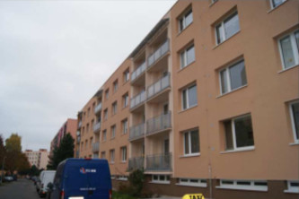
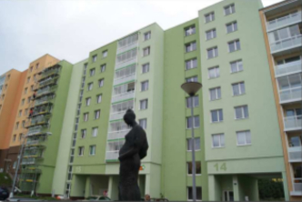
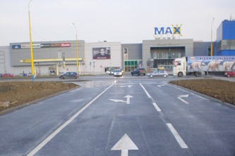
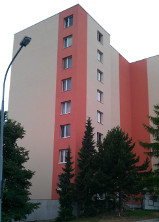
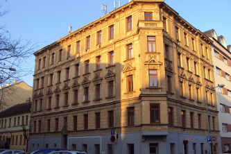
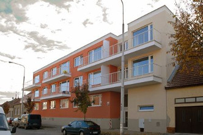
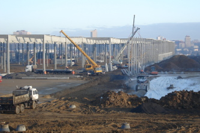

Reference

2013 - Studie využitelnosti AVČ, Havířov
- studie
- příprava podkladů pro výběrové řízení

2012 - Zateplení BD, ul. Valouškova, Brno
- návrh zateplení a výměny lodžií
- technický dozor

2012 - Celková rekonstrukce a zateplení BD, ul. Šebelová, Bílovice
- projek pro stavební povolení a realizaci
- technický dozor

2012 - Přístavba a nástavba RD, Ježkovice
- studie
- projekt pro stavební povolení

2012 - Zateplení a výměna instalací BD, ul. Dunajská, Brno
- inženýrská činnost

2011 - Revitalizace panelového domu v Třebíči
- technický dozor investora

2011 - Zateplení BD Vamberk
- technický dozor investora

2011 - Zateplení BD, ul. Korejská, Brno-Žabovřesky
- projektová dokumentace
- technický dozor

2011 - Zateplení a výměna elektroinstalace BD, Mikuláškovo náměstí, Brno
- inženýrská činnost

2011 - Rekonstrukce nájezdových ramp v areálu RWE, Brno
- projekt pro realizaci stavby

2011 - Revitalizace panelového domu Nádražní, Kuřim
- výběrové řízení
- technický dozor investora
- projektová dokumentace

2010 - Revitalizace panelového domu, Mikuláškovo náměstí, Brno
- projekt pro stavební povolení

2010 - Zateplení BD, ul. Jiráskova, Zbýšov
- projekt pro stavební povolení

2010 - Revitalizace panelového domu, ul. Foltýnova, Brno
- projekt pro stavební povolení
X
2010 - Rekonstrukce střechy rodinného domu, ul. Tišnovská, Brno
- výběrové řízení
- technický dozor investora
- projektová dokumentace pro realizaci stavby

2009 - Novostavba stáje v Krásné Hoře
- projekt pro realizaci stavby

2009 - Zemní práce (HTU, stabilizace) Digital Park Bratislava
- řízení stavby pro Sedos a.s.

2009 - Komunikace a odstavné plochy McDonald Prešov
- řízení stavby pro Sedos a.s.

2009 - BD na ul. Mášova, zateplení fasády, rekonstrukce kanalizace, rekonstrukce střechy
- technický dozor investora

07/2009 - 09/2009 - Revitalizace BD, Cementářské sídliště 1311-1314, Hranice
- výběrové řízení
- autorský dozor
- projekt zateplení, vytápění, vodovodu a kanalizace

2008 - Zateplení BD Zelené město, zhotovitel f. SYNER
- stavební dozor

2008 - BD na ul. Jiráskova v Brně. Výměna elektroinstalace a stoupaček vodovodu a kanalizace
- projektová dokumentace
- technický dozor investora
- výběrové řízení

2008 - Zemní práce (HTU, stabilizace) KIKA Olomouc
- řízení stavby pro Sedos a.s.
X
9/2008 - 10/2008 - Rekonstrukce kanceláří DanProjekt, Brno
- realizace stavby
X
9/2008 - Rekonstrukce bytu, ul. Pražská, Pelhřimov
- realizace stavby

2007 - Novostavba RD, Hostěnice
- projektová dokumentace
- technický dozor investora
- výběrové řízení

2007 - BD Jundrovská 14, Brno
- řízení stavby pro Moravská stavební a.s.

2007 - Zemní práce (HTU, stabilizace) Prologis park Ostrava
- řízení stavby pro Sedos a.s.

06/2007 - 08/2007 - Přestavba rodinného domu, Nová Cerekev
- realizace stavby

06/2005 - 06/2007 - Kompletní přestavba rodinného domu, Křižanov
- realizace stavby
- projektová dokumentace pro realizaci stavby
X
04/2007 - 05/2007 - Půdní vestavba v rodinném domě, Křižanov
- realizace stavby
- technický dozor investora
- projektová dokumentace pro stavební povolení
X
01/2007 - 04/2007 - Přestavba bytu, ul. Kosíkova, Brno
- realizace stavby

2006 - Fasáda bytového domu, ul. Cihlářská, Brno
- realizace stavby

2006 - Dálnice D8, tunel Panenská, budovy v portálech tunelů
- řízení stavby
- stavební dozor
X
03/2006 - 12/2006 - Novostavba rodinného domu, ul. Ambrožova, Brno-Kníničky

2005 - Rekonstrukce prodejny Meinl, ul. Kamínky, Brno
- realizace stavby